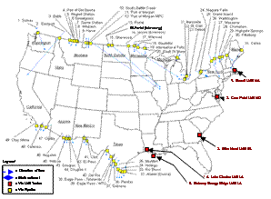

| Natural Gas Import/Export Pipelines |
About U.S. Natural Gas Pipelines - Transporting Natural
Gas
based on data through 2007/2008 with selected updates |
||||
|---|---|---|---|---|---|
|
As of the close of 2008 the United States has 58 locations where natural gas can be exported or imported.
Forty-eight natural gas pipelines, representing approximately 28 billion cubic feet (Bcf) per day of capacity, import and export natural gas between the United States and Canada or Mexico. Between 1990 and 2008, import pipeline capacity from Canada increased by 181 percent (to 18.1 Bcf per day) and from Mexico by 147 percent (to 0.9 Bcf per day). During the same period, export capacity to Canada more than tripled (to 4.3 Bcf per day) while export capacity to Mexico quadrupled (to 3.6 Bcf per day). In 2007, the United States received 99.8 percent of its pipeline- imported natural gas from Canada with the remainder from Mexico. Canada also accounted for 60 percent of pipeline natural gas exports, and Mexico, 40 percent. In 2007, the top five import points accounted for about 70 percent of all natural gas brought into the United States via pipeline. They are:
U.S. natural gas import and export activities are regulated under Section 3 of the Natural Gas Act of 1938 by the U.S. Department of Energy and the Federal Energy Regulatory Commission (FERC). While FERC is responsible for review and approval of the actual siting, construction, and operation of natural gas import and export facilities, DOE is responsible for authorization of the contracts governing the importing and exporting of natural gas.
|
U.S. Natural Gas Import & Export Locations

click to enlarge
|
||||